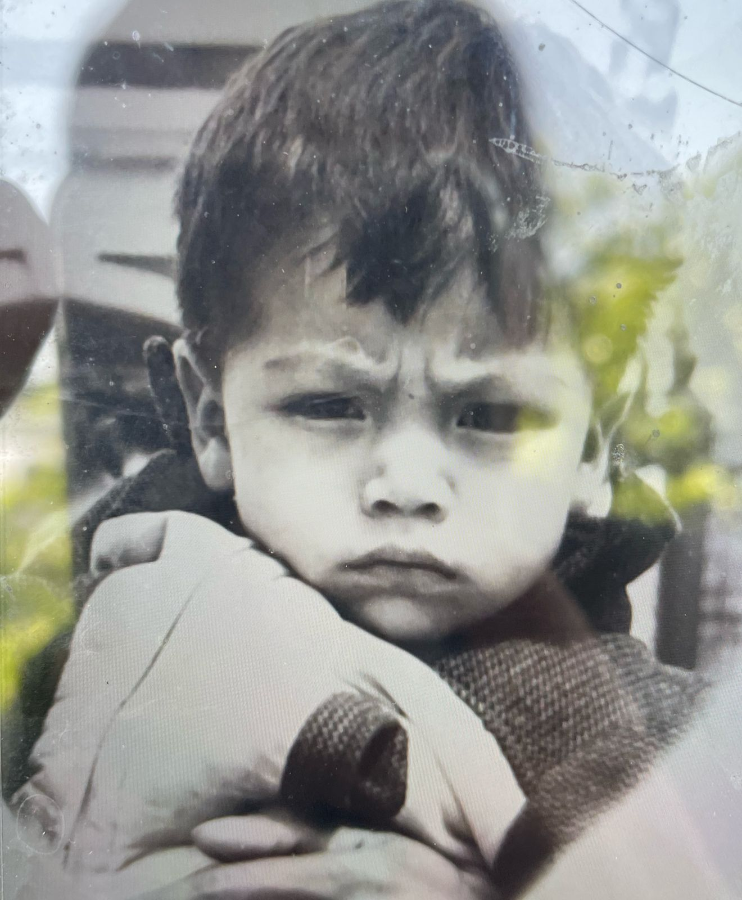
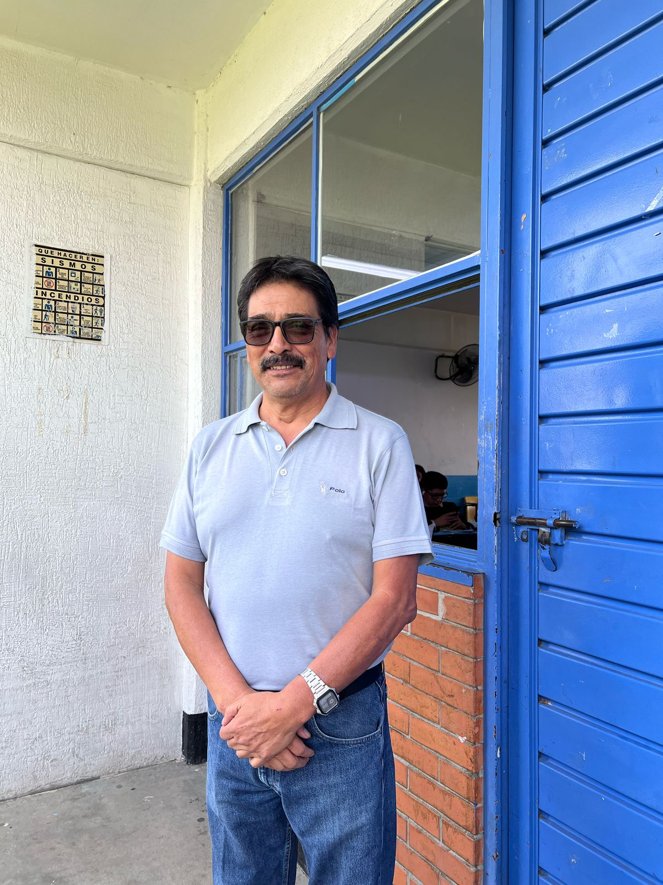
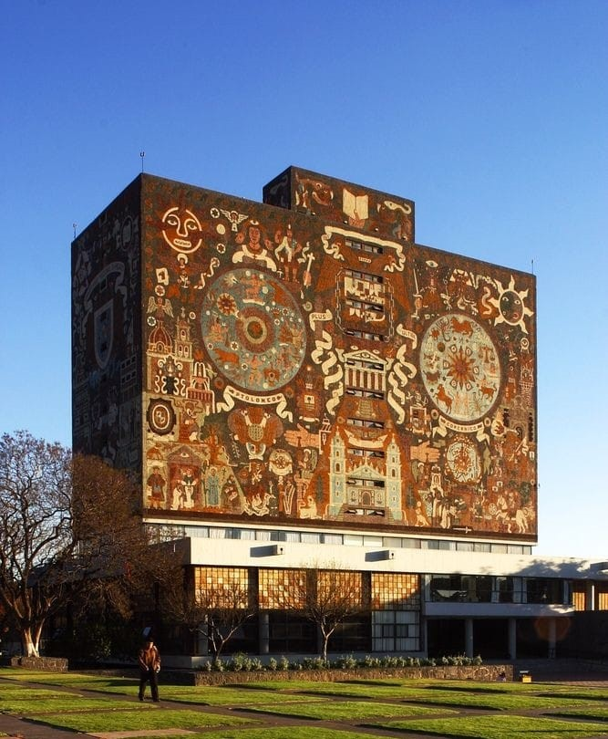
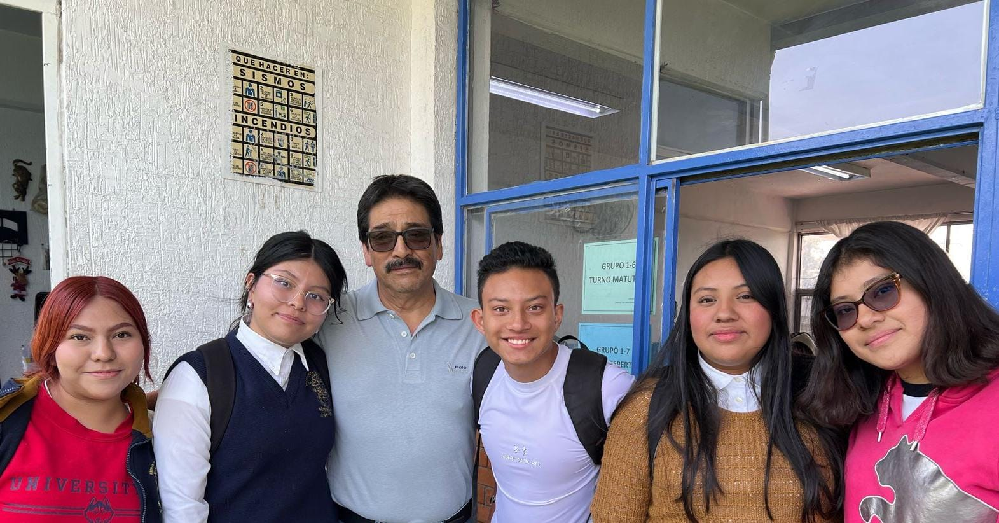

MARTIN GALLEGOS NAVA
"Yo soy, yo dije"
Con una pasion contagiosa por la ciencia y una dedicacion inquebrantable a la educcaion, el profesor Martin Gallegos
ha dejado y sigue dejando una huella imborrable en la comunidad estudiantil de la preparatoria Oficial num.115
A traves de su enseñanza y ejemplo,ha demostrado que la ciencia no es solo un conjunto de conceptos y teorias.
NACIMIENTO , EDUCACION Y PADRES.
Si no que es una herramienta poderosa para entender el mundo,el valor de la naturaleza y nuestro rol en la naturaleza.

Nacio en Huixquilucan en el estado de Hidalgo en 1962,sus padres: Carlos Gallegos Solalde Felisa Nava
En cuanto a su demas familia tiene seis hermanos varones y una hermana mujer sus nombres son Carlos Jorge,
Jesus,Juan Carlos, Guillermo, Jaime y Alicia.
Estudio la universidad en la "Facultad de Estudios Superiores Cuatitlan" se graduo como Medico Veterinario, desde muy joven se sintio atraido por la biologia, la naturaleza asi como la composicion taxonomica de los animales.

Sus mejores años fueron en la secundaria y universidad pues se dedico a estudiar y hacer deportes como el ciclismo.
Durante un tiempo se dedico a la veterinaria durante 6 años, otros años al sumistro de agua potable, dio conferencias cuando trabajo en un laboratorio clinico y en diagnosticos para animales.
El considera que el ser profesor hoy en dia es limitado , pues los alumnos se encuentran poco interesados en el estudio , no solo en cuanto a la ciencia,es muy dificil la relacion y alumos pero recata el "hay alumnos que son buenos", pues se ha llevado una sorpresa al encontrar alumnos altamete compatiblemente inteligentes. se ha dedicado a la docencia durante 25 años.
LOGROS Y RECONOCIMIENTOS:
Uno de sus exitos fue titularse como medico veterinario. 
Dar conferencias de Quimica en Ciudad Universitaria (UNAM)
Trabajar en un laboratorio clinico y practicar diagnosticos.
Tener las mejores calificaciones en "Laboratorio Qumico"
DATOS CURIOSOS:
Cancion favorita: Yo soy yo dije (Neil Diamond)
Comida favorita : Manitas de puerco en salsa verde
Bebida favorita : Whisky
Tiene una hija llamada Ana Iris y tambien es veterinaria
Sus momentos mas significativos han sido el nacimiento de su hija,la perdida de su papa y su abuela.
S tuviera que darle un consejo a los jovenes ¿Cual seria ?
Piensen en su futuro, no todo es diversion y no todo es risa es importante ser responsable,uno mismo crea su exito.

"EL EXITO PROFESIONAL ANTES QUE EL AMOR "
Gutierrez Juarez Abigail, Gutierrez Luna Lucia Rubi,Cruz Muciño Alondra,Melo Maldonado Daniela Anaid,Hernandez Mena Isacc Tadeo.